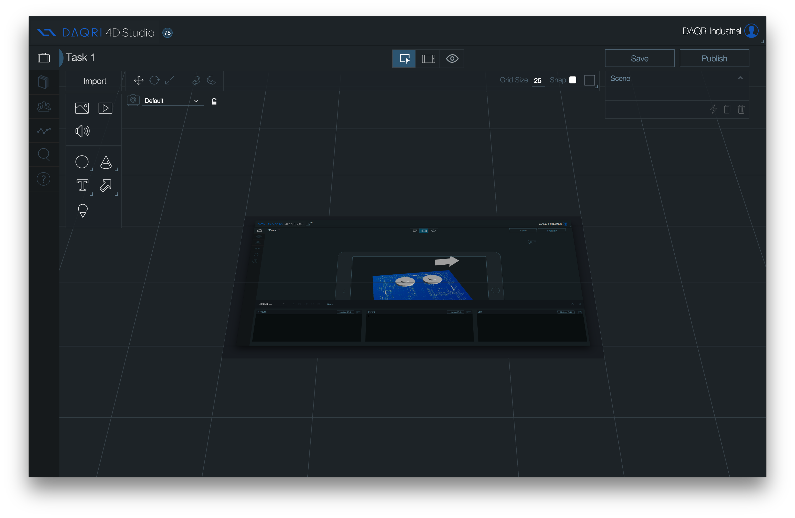
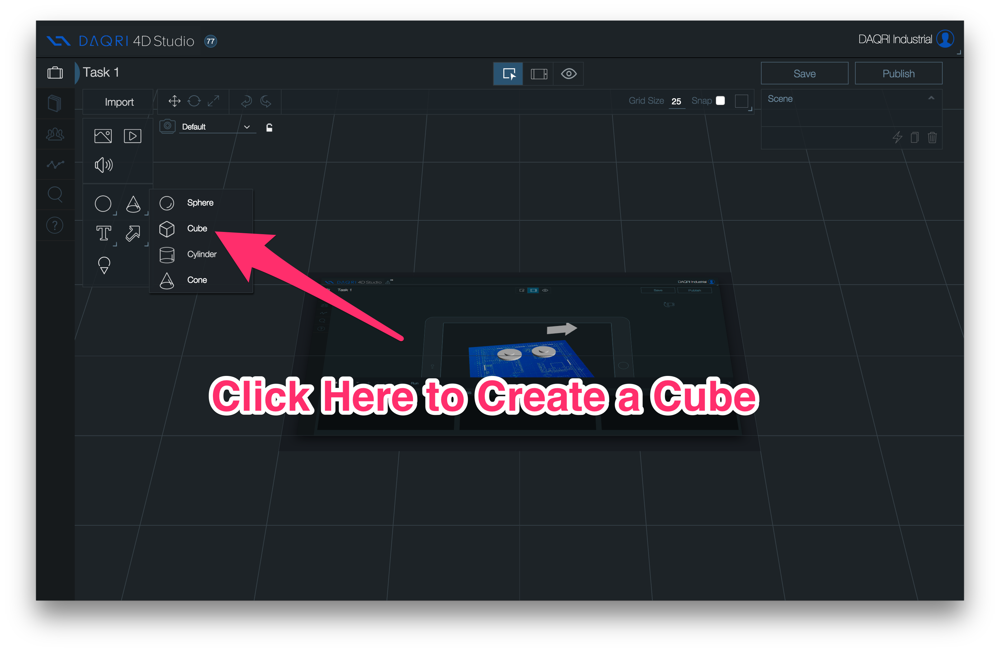
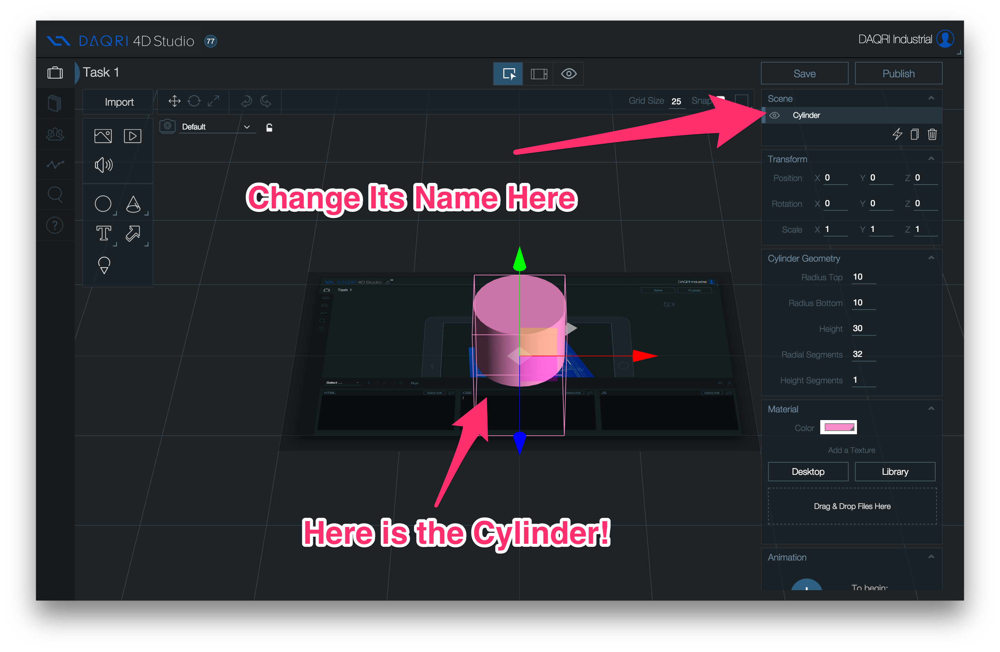
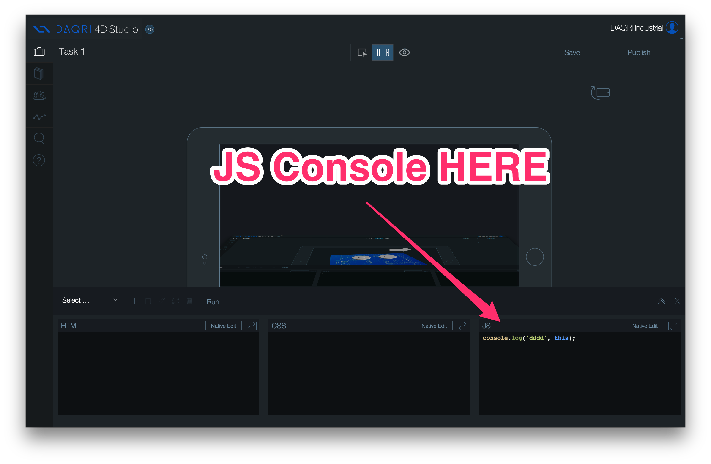
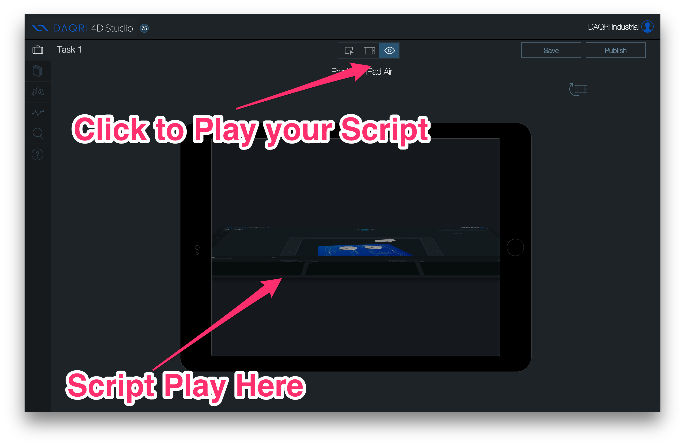
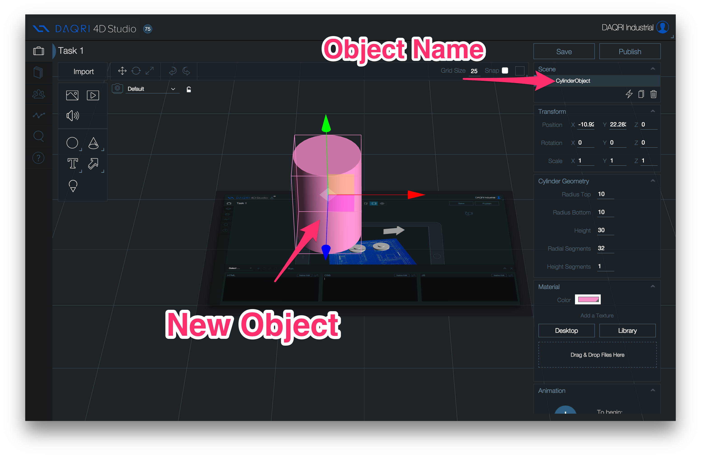

Contact me on twitter @jerome_etienne

Let me show you - demo here




// put that early in your script
var scene = this;var object3d = scene.getObjectByName('superObject')
var scene = this;
// listen to click event
document.body.addEventListener('click', function(event){
// find all objects under the mouse click
var intersects = daqri.util.computeIntersects(event.x, event.y);
// test if one object is found
if(intersects.length>0){
// get the selected object
var selected = intersects[0].object;
// here do what you like with it
console.log('object selected', selected);
}
})Move object to the right
// object3d is the variable containing the 3d javascript object
object3d.position.x += 50;How to make the object twice bigger
// set x,y,z all in one
object3d.scale.set(2,2,2);// here we change the object material
// material is the way the object is reflecting lights
// you can change its color, and so on
// here we change the opacity
object3d.material.opacity = 0.1;
object3d.material.transparent = trueHere we change the visibility of the 3d object
object3d.visible = true; // falseLet's create a sphere
var geometry = new THREE.SphereGeometry(1);
var material = new THREE.MeshPhongMaterial({
color : 'red'
});
var object3d = new THREE.Mesh(geometry, material);To add an object to a scene
scene.add(object3d)or with another parent
parent.add(object3d)scene.remove(object3d);